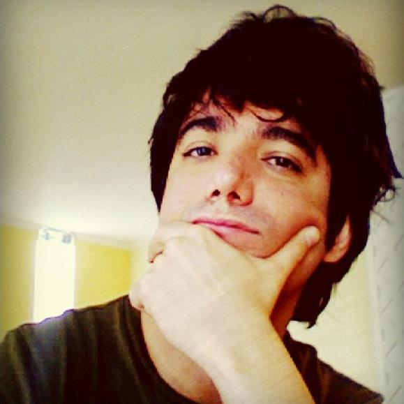

Saeed Saremi

Welcome to my personal website! I am a Senior Principal Research Scientist at Genentech, leading a team in Frontier Research. Previously, I was a researcher at UC Berkeley. I finished my PhD in physics at MIT under the supervision of Patrick A. Lee. My research is on generative modeling and the problem of sampling from high-dimensional distributions.
Selected Publications
-
Bach, F., & Saremi, S. (2025). Sampling binary data by denoising through score functions. In Proceedings of the International Conference on Machine Learning.
-
Kirchmeyer, M., Pinheiro, P. O., & Saremi, S. (2024). Score-based 3D molecule generation with neural fields. In Proceedings of the Advances in Neural Information Processing Systems.
-
Pinheiro, P. O., Jamasb, A., Mahmood, O., Sresht, V., & Saremi, S. (2024).
Structure-based drug design by denoising voxel grids. In Proceedings of the International Conference on Machine Learning.
-
Saremi, S., Park, J. W., & Bach, F. (2024). Chain of log-concave Markov chains.
In Proceedings of the International Conference on Learning Representations.
-
Frey, N. C., Berenberg, D., Kleinhenz, J., Hotzel, I., Lafrance-Vanasse, J., Kelly, R. L.,
Wu, Y., Rajpal, A., Ra, S., Bonneau, R., Cho, K., Loukas, A., Gligorijevic, V., & Saremi, S. (2024).
Protein discovery with discrete walk-jump sampling. In Proceedings of the International Conference on Learning Representations.
(Outstanding Paper Award)
-
Pinheiro, P. O., Rackers, J., Kleinhenz, J., Maser, M., Mahmood, O., Watkins, A., Ra, S., Sresht, V., & Saremi, S. (2023).
3D molecule generation by denoising voxel grids. In Proceedings of the Advances in Neural Information Processing Systems.
-
Saremi, S., & Srivastava, R. K. (2022). Multimeasurement generative models.
In Proceedings of the International Conference on Learning Representations.
-
Saremi, S., & Hyvärinen, A. (2019). Neural empirical Bayes.
Journal of Machine Learning Research, 20(181), 1–23.
-
Saremi, S., & Sejnowski, T. J. (2013). Hierarchical model of natural images and the origin of scale invariance.
Proceedings of the National Academy of Sciences, 110(8), 3071-3076.
-
Saremi, S. (2007). RKKY in half-filled bipartite lattices: Graphene as an example.
Physical Review B, 76(18), 184430.
-
Saremi, S., & Lee, P. A. (2007). Quantum critical point in the Kondo-Heisenberg model on the honeycomb lattice.
Physical Review B, 75(16), 165110.
Teaching
- CS 189/289A: Introduction to Machine Learning, UC Berkeley, EECS Department, Fall 2024